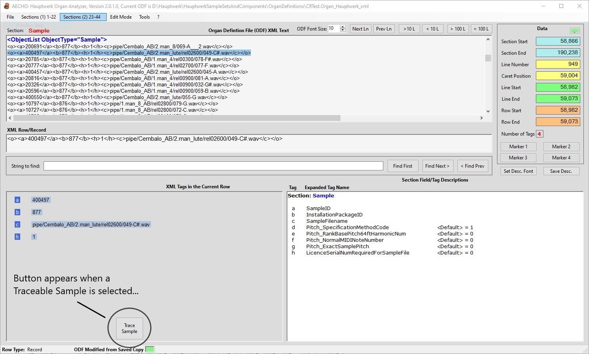

When positioned in the Sample Section, AECHO displays the Trace Sample
button, which in turn will open the Sample Trace form,
automatically performing a Trace on the (sound) Sample currently
selected in the ODF. Functionally, this is the same as selecting the
menu item menu > Tools > Trace
a Sample, manually entering the Sample's ID, then
clicking that form's Trace button. When the ODF is not
positioned on a Sample Record, the Trace Sample button is hidden.
The Sample Trace form expands a Sample Record, listing all
its defined Fields, both those present in the ODF and those not
present. AECHO show the default values that Hauptwerk will
implicitly use for
absent Fields. Then Records from other Sections that are "linked" to
this particular Sample are searched for, and if found, are displayed
in the same expanded format as the Sample. The Sample Trace
form can remain open while the main AECHO form is performing other
activities, but is closed when AECHO terminates, or when the user
closes the loaded ODF, as proper operation of Trace is tied to an
ODF. The user can choose to close the form manually, by clicking on
the X in
the form's upper-right corner, or selecting the menu > Exit
choice from Trace's menu-bar.
In this example, the user has selected the second row in the
Sample Section by double-clicking on it, loading it into the XML
Row/Record Area, and decomposing its Fields into the Tags Panel.
You'll note that the "<a>" Tag carries a value of "400497"
- this is the SampleID, the unique primary-key assigned to this
Sample Record. At the center-bottom of the Tags Panel, the Trace Sample
button was made visible by positioning on a Sample Record.
Clicking this button will dispatch the Sample Trace
form, passing it the SampleID of "400497", and then
automatically initiating Trace on that Sample.

Trace Sample Button, when positioned in the
Sample Section